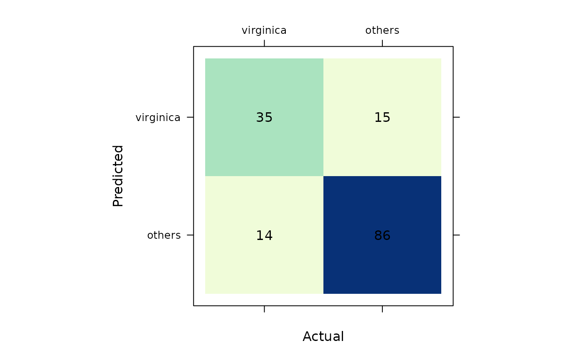

{SLmetrics}: Machine learning performance evaluation on steroids
SLmetrics.RmdOverview
{SLmetrics} is a low-level R package for supervised AI/ML performance evaluation. It uses {Rcpp} and {RcppEigen} as backend for memory efficient and fast execution of the various metrics. {SLmetrics} follows the syntax of base R, and uses S3-classes.
Why?
There are currently a few packages that bridges the gap between R and Python in terms of AI/ML performance evaluation; {MLmetrics}, {yardstick}, {mlr3measures}and {metrica}.
{MLmetrics} can be considered the legacy code when it comes to performance evaluation, and it served as a backend in {yardstick} up to version 0.0.2. It is built entirely on base R, and has been stable since its inception almost 10 years ago. However, it appears that the development has reached it’s peak and is currently stale - see, for example, this stale PR related to this issue.
Micro- and macro-averages have been implented in {scikit-learn} for many years, and {MLmetrics} simply didn’t keep up with the development.
{yardstick}, on the other hand, carried the torch forward and implemented these modern features. {yardstick} closely follows the syntax, naming and functionality of {scikit-learn} but is built with {tidyverse} tools; although the source code is nice to look at, it does introduce some serious overhead and carries the risk of deprecations.
Furthermore, it complicates a simple application by its verbose
function naming, see for example metric()-function for
<tbl> and metric_vec()-function for
<numeric> - the output is the same, but the call is
different. {yardstick} can’t
handle more than one positive class at a time, so the end-user is forced
to run the same function more than once to get performance metrics for
the adjacent classes.
{SLmetrics}, as the name suggests, closely resembles {MLmetrics} in its simplicity, but this is where the similarity ends. {SLmetrics} reflects the simplicity of the application; comparing two vectors. The functionality and features closely follows that of {scikit-learn} and {pytorch} - but it has a significant edge over the two, alongside the R packages, when it comes to speed, efficiency and user-friendliness; It uses c++ as backend, and S3-classes as frontend (See here for speed comparison)
Basic usage: classification
# 1) recode iris
# to binary problem
iris$Species <- factor(
x = as.numeric(
iris$Species == "virginica"
),
levels = c(1,0),
labels = c("virginica", "others")
)
# 2) fit the logistic
# regression
model <- glm(
formula = Species ~ Sepal.Length + Sepal.Width,
data = iris,
family = binomial(
link = "logit"
)
)
# 3) generate predicted
# classes
predicted <- as.factor(
ifelse(
predict(model, type = "response") > 0.5,
yes = "virginica",
no = "others"
)
)
# 1) construct confusion
# matrix
confusion_matrix <- cmatrix(
actual = iris$Species,
predicted = predicted
)
# 2) visualize
# confusion matrix
plot(
confusion_matrix
)
# 3) summarise
# confusion matrix
summary(
confusion_matrix
)
#> Confusion Matrix (2 x 2)
#> ================================================================================
#> virginica others
#> virginica 35 15
#> others 14 86
#> ================================================================================
#> Overall Statistics (micro average)
#> - Accuracy: 0.81
#> - Balanced Accuracy: 0.78
#> - Sensitivity: 0.81
#> - Specificity: 0.81
#> - Precision: 0.81